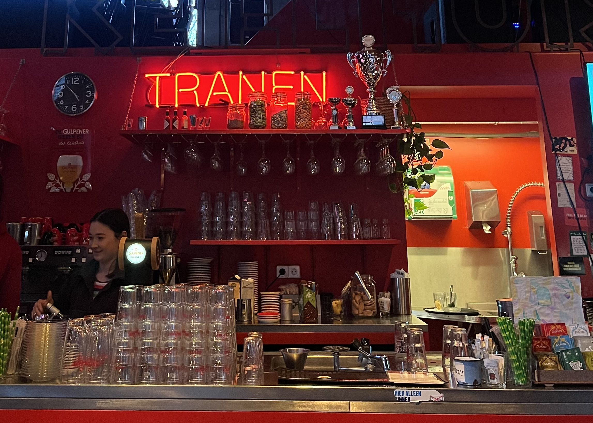

Wie ben ik?
Mijn naam is Mercedes Fuentes, 21 jaar en ik woon in Weesp. Mijn hele leven is echter in hartje Amsterdam; mijn school, mijn werk, mijn familie en vrienden. Aangezien ik groot filmliefhebber ben, kan je mij vaak vinden in de bioscopen en filmhuizen van Amsterdam.
Deze blog is ontstaan omdat ik graag mijn reis naar duurzaamheid en mijn liefde voor film wil combineren om zo mensen te inspireren hetzelfde te doen.
Zwerfafval
Sinds de invoering van statiegeld op kleine flesjes en blikjes ligt er meer zwerfafval in Amsterdam. De gemeente spreekt dan ook van "statiegeldproblematiek" en probeert maatregelen te nemen. Wij als bewoners en toeristen kunnen echter ook bijdragen aan een schonere straat en leefomstandigheid. Volgens de gemeente worden vuilnisbakken op straat opengetrokken, waardoor er allerlei vuil op straat terecht komt.
Ik ben daarom in actie gekomen; bij bioscoop Het Ketelhuis kan je voor een aantal stukken zwerfafval gratis naar de film. Het Ketelhuis vertoont een reeks films over duurzaamheid die gratis toegankelijk zijn. Het draait bij de films over de vraag hoe we duurzamer kunnen leven.
Locatie
Adres: Pazzanistraat 4, 1014 DB Amsterdam